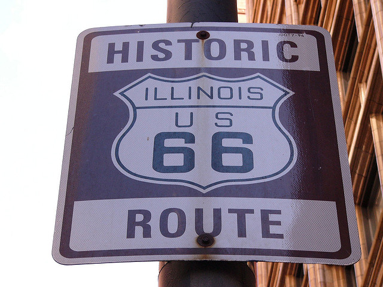
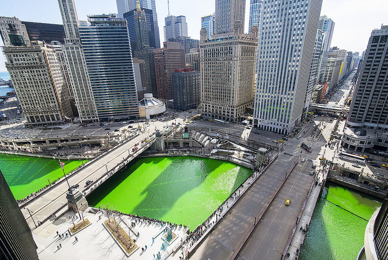
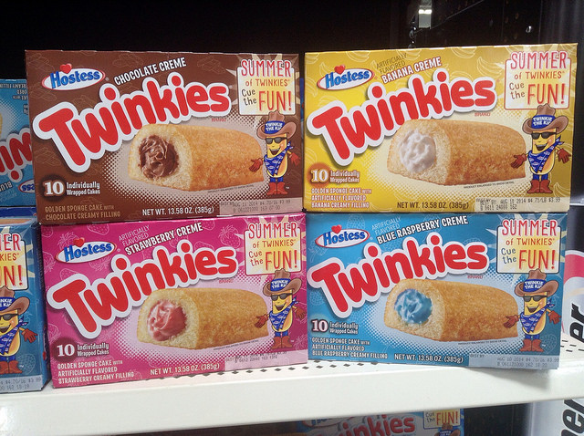

The name Chicago comes from the Illinois people's word “Chicagou” or “Shikaakwa,” which translates to “striped skunk," and also refers to the wild leek that grew in the region, Allium tricoccum.

Planning a road trip? Route 66 starts in Chicago.
The Field Museum owns the world’s most complete Tyrannosaurus rex skeleton. Its name is Sue.

Chicagoans can’t resist messing around with their river. On St. Patrick’s Day, the Plumbers Union dyes it a bright shade of Irish green, and every summer the Special Olympics holds a fundraiser where tens of thousands of rubber ducks race down the waterway.
In the late 19th century, the river was reversed to empty into the Mississippi River instead of Lake Michigan.
In the 1850s, the entire city was raised up several feet to fix a drainage problem.

In 1930, the Twinkie was invented in Chicago.
Be careful parking in the Windy City. A bitter ex-boyfriend decided to leave a car registered to Chicago resident Jennifer Fitzgerald at O'Hare International Airport for a few years. As a result, Fitzgerald received 678 tickets and was whacked with a $100,000 fine. (She settled with the city in 2013.)
Chicago has 26 miles of public beaches that offer a refreshing respite from the summer heat.
There’s a Giant Silver Bean Sculpture in the Middle of Town.